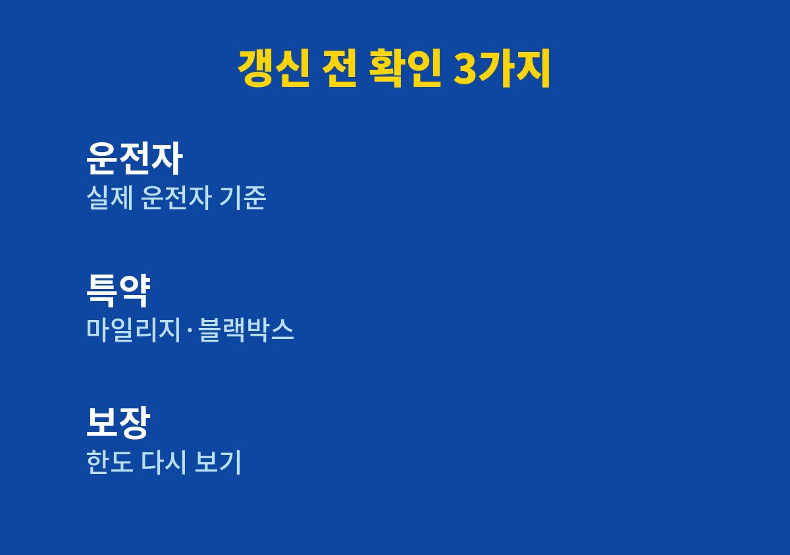
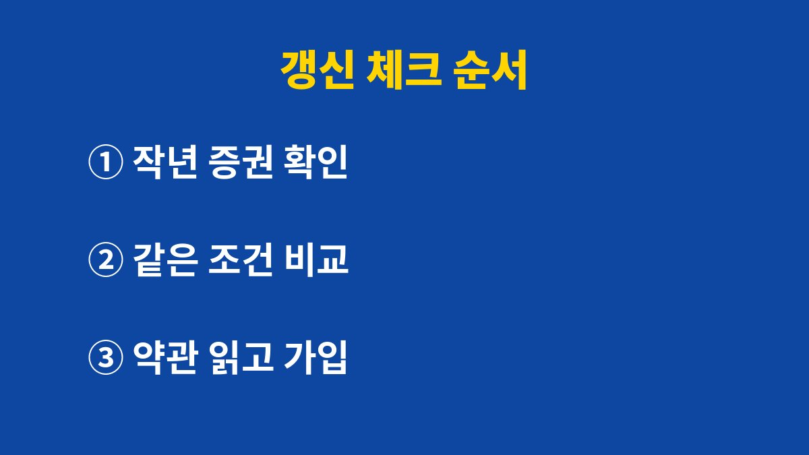

자동차보험 만기 안내 문자를 받고도 작년 조건 그대로 갱신을 누르는 사람에게 필요한 기준과 순서를 담았다.
2026년 11월 기준 보험 비교 서비스 안내와 내가 갱신 때마다 확인하는 항목을 함께 정리했다.
특정 보험사를 추천하는 글이 아니라 어떤 조건을 다시 봐야 하는지에 대한 내 기록이다.
쇼핑몰 주문이 몰리는 시기에는 보험 만기 문자도 그냥 스쳐 지나가기 쉽다.
나도 몇 해 동안 기존 보험사가 보내 준 갱신 안내를 그대로 수락했다.
작년과 비슷한 금액이면 괜찮다고 여겼고 조건을 다시 볼 생각은 하지 못했다.
그런데 그 사이 우리 집 운전 환경은 꽤 많이 바뀌어 있었다.
아이가 생기고 출퇴근 대신 택배 발송 위주로 차를 쓰면서 1년 주행거리가 달라졌다.
차에 블랙박스를 새로 달았고 운전하는 사람의 범위도 다시 정리할 필요가 생겼다.
이런 변화는 할인 특약이나 운전자 범위와 직접 연결된다.
갱신 때 확인하지 않으면 바뀐 생활이 보험에 반영되지 않은 채 1년이 지나간다.
가장 먼저 보는 것은 누가 이 차를 운전하는지다.
운전자 범위를 넓게 잡을수록 보험료가 올라가는 구조가 일반적이라 실제 운전하는 사람에 맞게 정리하는 것이 중요하다.
반대로 범위를 너무 좁히면 가족이 급하게 운전했을 때 보상을 받지 못할 수 있다.
그래서 나는 할인보다 실제 운전 상황을 먼저 기준으로 삼는다.
주행거리가 짧다면 마일리지 특약, 블랙박스가 있다면 블랙박스 특약처럼 해당되는지 확인할 항목이 있다.
자녀가 있는 집을 위한 특약을 운영하는 보험사도 있어 조건을 꼼꼼히 읽어 본다.
다만 특약 이름과 할인 조건은 회사마다 달라 같은 이름이라도 내용을 비교해야 한다.
대인·대물 같은 기본 보장 한도도 갱신 때 함께 점검한다.
| 확인 항목 | 확인하는 이유 | 내 방식 |
|---|---|---|
| 운전자 범위 | 보험료와 보상 범위가 달라짐 | 실제 운전자 기준으로 정리 |
| 주행거리 | 마일리지 특약 해당 여부 | 계기판 사진 미리 저장 |
| 블랙박스 | 장착 특약 해당 여부 | 장착 정보 미리 확인 |
| 보장 한도 | 사고 때 보상 범위 | 작년 증권과 나란히 비교 |

나는 보험 증권에 적힌 만기일을 휴대폰 달력에 등록하고 한 달 전에 알림이 오도록 해 두었다.
바쁜 시기에 몰려서 처리하지 않으려고 만든 장치다.
알림이 오면 그 주 주말에 작년 증권을 꺼내 놓고 한 번에 비교한다.
이 작은 습관 하나로 갱신을 급하게 처리하는 일이 사라졌다.
보험협회가 운영하는 보험다모아 같은 비교 사이트에서는 여러 보험사의 자동차보험 조건을 한곳에서 살펴볼 수 있다.
나는 금액만 보지 않고 같은 운전자 범위와 같은 보장 한도로 맞춘 뒤 비교한다.
조건을 맞추지 않으면 싸 보이는 상품이 실제로는 보장이 빠져 있는 경우가 있기 때문이다.
최종 가입 전에는 해당 보험사의 약관과 상품설명서를 직접 확인한다.
아래 순서는 내가 매년 갱신 때 그대로 따라 하는 방법이다.
처음에는 시간이 걸렸지만 두 번째 해부터는 비교할 항목이 정리되어 훨씬 빨라졌다.
비교한 내용은 작년 증권 옆에 메모로 남겨 두어 다음 해에 그대로 이어서 본다.

자동차보험은 매년 돌아오는 일이라 습관처럼 넘기기 쉽다.
하지만 생활이 바뀐 해에는 조건을 다시 맞추는 것만으로도 보험이 내 상황에 더 가까워진다.
나도 조건을 다시 맞춘 뒤로는 갱신 문자를 받아도 무엇부터 볼지 막막하지 않게 되었다.
보장 내용이 헷갈릴 때는 보험사 고객센터나 금융감독원 안내로 확인하는 편이 안전하다.
다음 글에서는 연말에 미리 챙겨 두면 좋은 자동차세 연납 신청 방법을 정리할 예정이다.
※ 2026년 기준 공공기관 안내와 개인 경험을 바탕으로 정리한 글이며, 차종과 연식에 따라 기준이 다를 수 있어 차량 설명서와 공식 안내를 함께 확인하길 바란다.